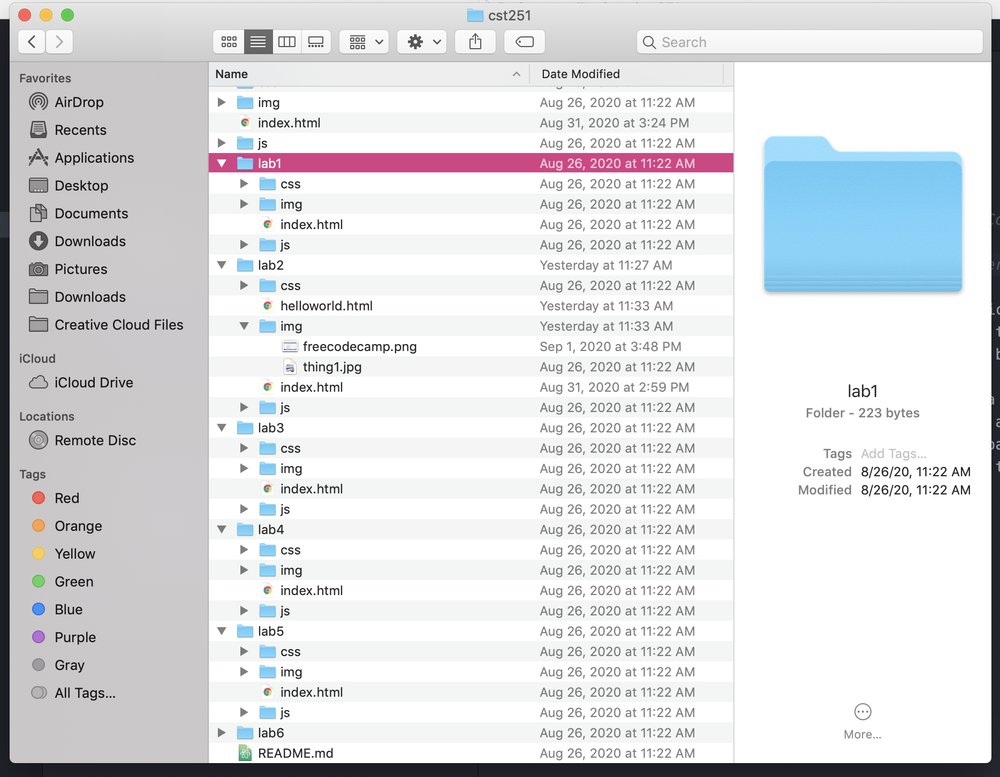
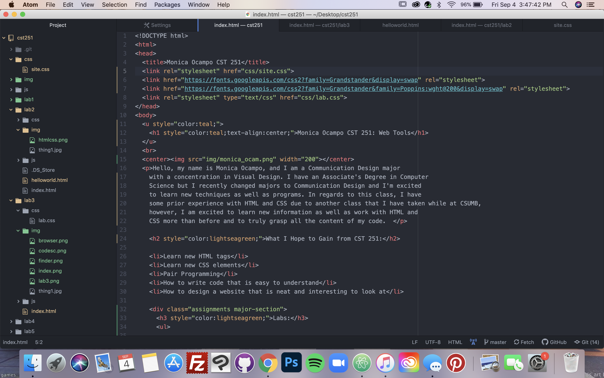
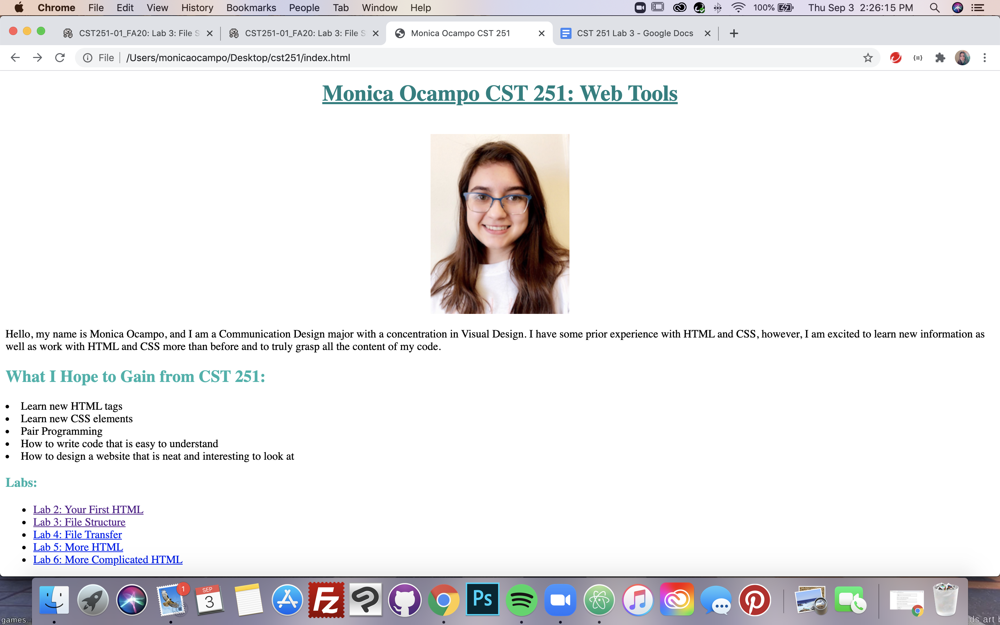
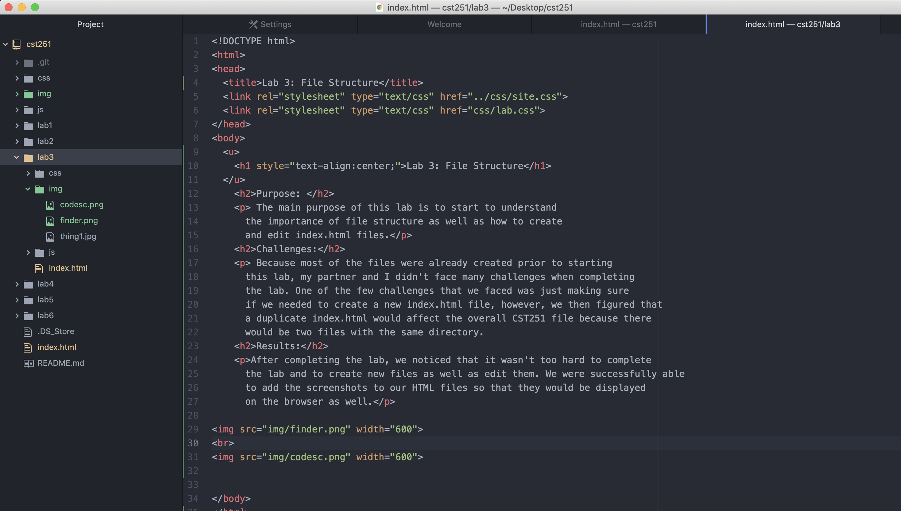
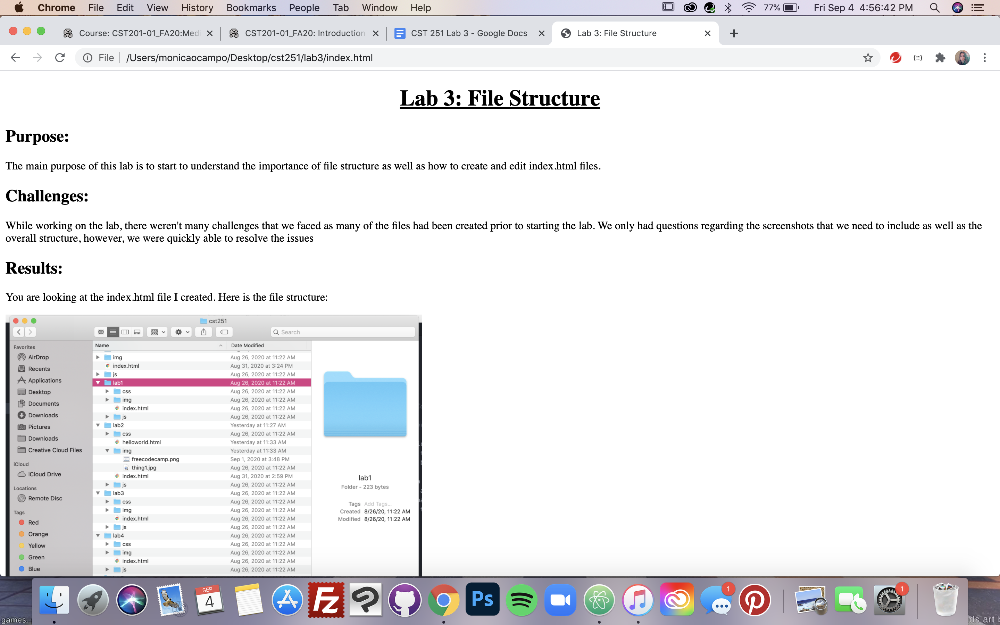

The main purpose of this lab is to start to understand the importance of file structure as well as how to create and edit index.html files.
While working on the lab, there weren't many challenges that we faced as many of the files had been created prior to starting the lab. We only had questions regarding the screenshots that we need to include as well as the overall structure, however, we were quickly able to resolve the issues.
You are looking at the index.html file I created. Here is the file structure:
Screenshot of Finder
Screenshot of cst251/index.html code
Screenshot of Index.html in Browser
Screenshot of Lab 3 code in Atom
Screenshot of cst251/lab3/index.html in Browser